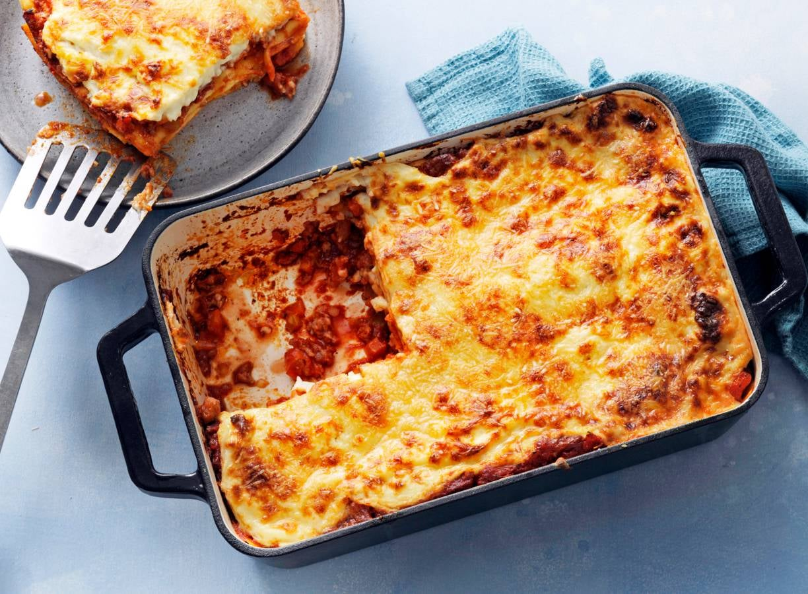

Lasagne

Description
Een verse lasagne is puur comfort food. Met weinig tijd en enkele
eenvoudige budgetvriendelijke ingrediënten zet je een forse schotel op de
tafel. Je kan deze snelle lasagne ook op voorhand maken, zodat je bij
gebrek aan tijd of als je gasten hebt heel snel de borden royaal kan
vullen met een dampende Italiaanse klassieker. (credits: Meus)
- Olijfolie
- Gehakt
- Wortelen
- Look
- Ui
- Courgette
- Champignons
- Kruiden
- Passata
- Bloem
- Boter
- Melk
- Geraspte kaas
- Lasagnevellen
Steps
-
Maak bolognesesaus. Ajuinen zweten, gehakt bakken, look toevoegen,
groentjes even meebakken. Dan kruiden en passata toevoegen en 30min
laten pruttelen.
-
Maak bechamel. Boter en bloem verhitten. Melk toevoegen en 5 minuutjes
laten koken.
-
Laag per laag lasagne opbouwen, bovenop kaas strooien en 30min op 200°C
bakken.